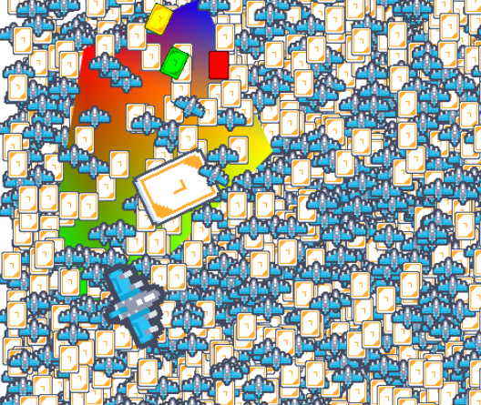

A highly efficient and lightweight WebGL renderer capable of rendering 10k sprites at 60fps.
Intel(r) UHD graphic 620 can handle 30k sprites at a stable 60fps (integrated graphics)NVIDIA GeForce GTX 1050 with Max-Q Design can handle 60k sprites at a stable 60fps (discrete graphics)(32 * 32 texture sprites bouncing)
demo ( source code )
matrix stack demo ( source code )
custom shader demo ( source code )
npm i rapid-render
Or use unpkg
<script src="https://unpkg.com/rapid-render/dist/rapid.umd.cjs"></script>
import { Rapid } from "rapid-render"
let rapid = new Rapid({
canvas: document.getElementById("game"),
backgroundColor: Color.fromHex("FFFFFF")
})
// Creating textures
const cat = await rapid.textures.textureFromUrl("./cat.png")
const plane = await rapid.textures.textureFromUrl("./plane.png")
// or
// Texture.fromImageSource(img)
// Texture.fromUrl(url)
// set clip
cat.setClipRegion(
10,10 // top-left corner of the clipped region.
50,50 // size
)
// R G B A
const color = new Color(255,255,255,255)
// or Color.fromHex
// Called before starting rendering
rapid.startRender()
rapid.save() // Save state
rapid.matrixStack.translate(0,0)
rapid.matrixStack.scale(1)
rapid.matrixStack.rotate(0)
// texture offset color
rapid.renderSprite(cat, 0, 0, color) // draw Sprite
// or rapid.renderSprite(cat, 0, 0, { color })
rapid.restore() // back to the previous saved state
// draw graphic
// vertices can have different colors
const path = Vec2.FormArray([[0, 0], [100, 0], [100, 100]]) //[new Vec2(0, 0), new Vec2(100, 0), new Vec2(100, 100)]
rapid.renderGraphic(0,0,{points:path, color:green})
// or
// rapid.startGraphicDraw()
// rapid.addGraphicVertex(0, 0, color)
// rapid.addGraphicVertex(100, 0, color)
// rapid.addGraphicVertex(100, 100, color)
// rapid.endGraphicDraw()
// Called after rendering
rapid.endRender()
// set the size
rapid.resize(100,100)
View demo and watch detailed shader code custom shader demo ( source code )
const vertexShaderSource = `...`
const fragmentShaderSource = `...`
const customShader = new GLShader(rapid, vertexShaderSource, fragmentShaderSource)
rapid.startRender()
rapid.renderSprite(plane, 100, 100, {
shader: customShader, // shader
uniforms: {
// Set custom uniform (You can set mat3, vec2, and so on here)
uCustomUniform: Number(costumUniformValue)
// uVec2Uniform: [0,2] // recognized as vec2
// uMat3Uniform: [
// [0,0,0],
// [0,0,0],
// [0,0,0],
// ]
// recognized as mat3
}
});
rapid.endRender()
